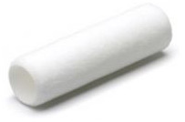
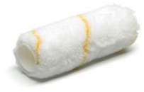
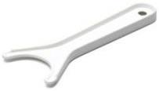
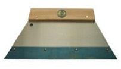
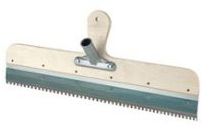
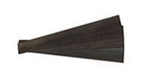
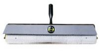
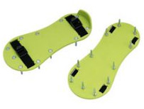

QTP промышленные полы

Задайте ваши вопросы специалистам АнКоринжиниринг. Вам предложат оптимальные технологии, оборудование и материалы для проведения работ по гидроизоляции, инъектированию, конструкционному ремонту.
ПОЛИМЕРНЫЕ МАТЕРИАЛЫ ДЛЯ ПРОМЫШЛЕННЫХ ПОЛОВ
РЕШЕНИЯ QTP
Паркинги
Общественные здания
Торговые центры
Складские помещения
Фармацевтика
Здравоохранение
Чистые помещения
Пищевая промышленность
Животноводство
Энергетика
Высокотехнологичные производства
Химическая промышленность
КАТАЛОГ
Химстойкие материалы
Токопроводящие материалы
Материалы для наливных полов
Краски, лаки
Грунтовки, связующие
Спецматериалы
|
Артикул |
Наименование материала |
Описание |
|
|
QTP® 1000 |
Эпоксидная грунтовка |
Эпоксидный полимер с низкой вязкостью, высокой проникающей способностью и ускоренным набором прочности. Глянцевая поверхность. Не содержит органические растворители. Быстрый набор прочности. |
|
|
QTP® 1010 |
Эпоксидная грунтовка |
Эпоксидный, грунтовочный состав. Не содержит органические растворители. Полуматовая поверхность. Сверхбыстрый набор прочности. |
|
|
QTP® 1020 |
Эпоксидный наливной состав для выравнивания |
Двухкомпонентный неокрашенный эпоксидный состав для устройства выравнивающих слоев под укладку полимерных покрытий. Полуматовая поверхность. Не содержит органические растворители. Сверхбыстрый набор прочности. |
|
|
QTP® 1020 RAL |
Эпоксидный наливной состав для выравнивания окрашенный |
Двухкомпонентный окрашенный эпоксидный состав для устройства выравнивающих слоев под укладку полимерных покрытий. Полуматовая поверхность. Не содержит органические растворители. Сверхбыстрый набор прочности. |
|
|
QTP® 1030 |
Эпоксидный наливной состав |
Двухкомпонентный окрашенный эпоксидный состав для выравнивающих и финишных слоев полимерных покрытий. Не содержит органические растворители. Полуматовая поверхность. Отличное соотношение цены и качества. Быстрый набор прочности. |
|
|
QTP® 1040 |
Эпоксидный наливной состав с повышенной химстойкостью |
Двухкомпонентный окрашенный эпоксидный состав для наливных и окрасочных покрытий с повышенной химстойкостью. Полуматовая поверхность. Не содержит органические растворители. Быстрый набор прочности. |
|
|
QTP® 1050 |
Эпоксидная краска |
Эпоксидная краска для бетонных полов. Полуматовая поверхность. Не содержит растворители. Не содержит органические растворители. Быстрый набор прочности. |
|
|
QTP® 1101 |
Универсальное связующее |
Универсальное связующее общего применения, высокий глянец, долгое время жизни. Не содержит органические растворители. Глянцевая поверхность. Подходит для применения в условиях повышенных температур до 40 0С |
|
|
QTP® 1130 |
Прозрачный эпоксидный наливной состав |
Двухкомпонентный прозрачный наливной эпоксидный состав для изготовления 3D полов и полимерных покрытий на основе цветного кварцевого песка, а также в качестве идеального глянцевого финишного покрытия. Не содержит органические растворители. Высокая ударопрочность. Подходит для применения в условиях повышенных температур до 40 0С |
|
|
QTP® 1140 |
Декоративный эпоксидный наливной состав |
Окрашенный эпоксидный состав для финишных слоев полимерных покрытий, имеет идеальную высокоглянцевую сверхровную поверхность. Не содержит органические растворители. Высокая ударопрочность. Подходит для применения в условиях повышенных температур до 40 0С |
|
|
QTP® 1350 |
Тиксотропная эпоксидная цветная эмаль |
Химстойкаятиксотропная эпоксидная цветная эмаль для горизонтальных и вертикальных поверхностей. Глянцевая поверхность. Не содержит растворители. |
|
|
QTP® 1360 |
Эпоксидный химстойкий лак |
Прозрачный эпоксидный лак для финишных слоев эпоксидных покрытий. Сверхвысокая химическая и механическая стойкость. Глянцевая поверхность. Не содержит органические растворители. |
|
|
QTP® 2000 |
Полиуретановая грунтовка |
Полиуретановый бесцветный низковязкий грунтовочный состав, не содержащий растворители. Глянцевая поверхность. Быстрый набор прочности. |
|
|
QTP® 2030 |
Полиуретановый наливной состав |
Окрашенный полиуретановый состав для выравнивающих и финишных слоев полимерных покрытий. Глянцевая поверхность. Не содержит растворители. |
|
|
QTP® 3000 |
Водоразбавимая эпоксидная грунтовка |
Водоразбавимый бесцветный эпоксидный грунтовочный состав. Глянцевая поверхность. Хорошая адгезия к влажным основаниям. Не содержит органические растворители. |
|
|
QTP® 3030 |
Водоразбавимый эпоксидный наливной состав |
Окрашенный водоразбавимый эпоксидный состав для выравнивающих и финишных слоев полимерных покрытий. Матовая поверхность. Не содержит органические растворители. Повышенная термостойкость. |
|
|
QTP® 3040 |
Универсальный водоразбавимый эпоксидный наливной состав |
Окрашенный водоразбавимый эпоксидный состав для наливных и окрасочных слоев. Матовая поверхность. Не содержит органические растворители. |
|
|
QTP® 3050 |
Эпоксидная водоразбавимая УФ-стойкая краска |
Водоразбавимая эпоксидная паропроницаемая краска для защиты бетонных полов и стен от химических воздействий. Глянцевая поверхность. Стойкость к загрязнениям. Высокая химстойкость. УФ-стойкая. Не содержит органические растворители. |
|
|
QTP® 3161 |
Эпоксидный матовый лак |
Матовый износостойкий паропроницаемый эпоксидный лак на водной основе. УФ-стойкий. Стойкость к растворителям и загрязнениям. |
|
|
QTP® 1040 AS |
Токоотводящий эпоксидный наливной состав |
Окрашенный токоотводящий эпоксидный состав для устройства наливного финишного слоя антистатического покрытия. Хорошая химстойкость. Не содержит органические растворители. Полуматовая поверхность. Быстрый набор прочности. |
|
|
QTP® 1070 |
Универсальная эпоксидная система с быстрым набором прочности |
Эпоксидное связующее быстрого набора прочности (2 часа до эксплуатации при 23 0С), применяется для грунтования, ремонта и устройства покрытий в сжатые сроки, низких температурах и повышенной влажности. Глянцевая поверхность. Не содержит органические растворители. |
|
|
QTP® 1140 AS |
Токоотводящий эпоксидный наливной состав |
Окрашенный токоотводящий эпоксидный состав для устройства наливного финишного слоя антистатического покрытия. Не содержит органические растворители. Сверхглянцевая поверхность. Высокая ударопрочность. Подходит для применения в условиях повышенных температур до 40 0С |
|
|
QTP® 2030 AS |
Полиуретановый токоотводящий наливной пол |
Окрашенный токоотводящий полиуретановый состав для устройства наливного финишного слоя антистатического покрытия. Глянцевая поверхность. Не содержит органические растворители. |
|
|
QTP® 3010 AS |
Токоотводящая тиксотропная эпоксидная грунтовка |
Эпоксидная токопроводящая паропроницаемая грунтовка на водной основе. Не содержит органические растворители. Высокая стабильность электропроводности. Низкий расход. |
|
|
QTP® 3030 AS |
Водоразбавимый эпоксидный наливной токоотводящий состав |
Окрашенный токоотводящий водоразбавимый эпоксидный состав для устройства наливного финишного слоя антистатического покрытия. Матовая поверхность. Не содержит органические растворители. Повышенная термостойкость. |
|
ВСПОМОГАТЕЛЬНЫЕ МАТЕРИАЛЫ
|
Артикул |
Описание |
|
|
|
QTP® 0000 |
Тиксотропная добавка- загуститель для полимерных составов QTP® |
|
|
|
QTP® QS 0.1-0.4 |
Прокаленный кварцевый песок |
|
|
|
QTP® QS 0.3-0.6 |
Прокаленный кварцевый песок |
|
|
|
QTP® QS 1.0-1.5 |
Прокаленный кварцевый песок |
|
|
|
QTP® QS Color |
Прокаленный кварцевый песок, окрашенный по стандарту RAL - К |
|
|
|
QTP® CT |
800 |
Медная самоклеющаяся лента для создания токопроводящей системы при устройстве антистатических и токоотводящих напольных покрытий. На каждые 30 м² один отводной потенциал. Длина 20 м, ширина 10 мм, толщина 0,1 мм. Сопротивление 0,016 мм²/м |
|
ИНСТРУМЕНТ И ОБОРУДОВАНИЕ
|
Артикул |
Цена, руб./шт. |
Фото |
Описание |
|
QTP® T 001 |
295 |
 |
Валик войлочный Филт 25 см/ 38 мм. Создает гладкое покрытие. Длина ворса 5 мм. Идеален для нанесения лака. Производство ANZA (Швеция). |
|
QTP® T 002 |
420 |
 |
Валик веревочный Руллекс 25 см/38 мм с закругленными краями, высокой производительностью и хорошей покрывающей способностью. Создает покрытие средней шероховатости. Великолепно подходит для нанесения краски. Длина ворса 18 мм. Производство ANZA (Швеция). |
|
QTP® T 003 |
250 |
|
Держак для валика 25 см. Крепления с обеих сторон. Эргономичная ручка для удобного захвата. Может использоваться в сочетании с удлинителями. Производство ANZA (Швеция). |
|
QTP® T 004 |
80 |
 |
Скребок для очистки валика. Производство ANZA (Швеция). |
|
QTP® T 005 |
 |
Ракля для нанесения самонивелирующихся монолитных полимерных материалов шириной 28 см с деревянной рукояткой для сменных вкладышей. |
|
|
QTP® T 006 |
 |
Ракля для нанесения самонивелирующихся монолитных полимерных материалов шириной 56 см с деревянной рукояткой для сменных вкладышей. Для работы стоя в крепление вставляется рукоятка. |
|
|
QTP® T 007 |
 |
Сменные металлические вкладыши для ракли 28 см, имеют две рабочие поверхности. |
|
|
QTP® T 008 |
Сменные металлические вкладыши для ракли 56 см, имеют две рабочие поверхности. |
||
|
QTP® T 009 |
 |
Валик игольчатый для удаления воздушных пузырьков из самонивелирующихся монолитных полимерных материалов . Ширина 25 см, длина шипа 11 мм. |
|
|
QTP® T 010 |
Валик игольчатый для удаления воздушных пузырьков из самонивелирующихся монолитных полимерных материалов . Ширина 50 см, длина шипа 11 мм. |
||
|
QTP® T 011 |
 |
Мокроступы. Предназначены для передвижения по влажной стяжке, невысохшему клею, свеженанесенному наливному полимерному полу. |